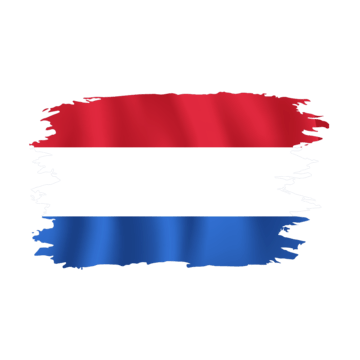
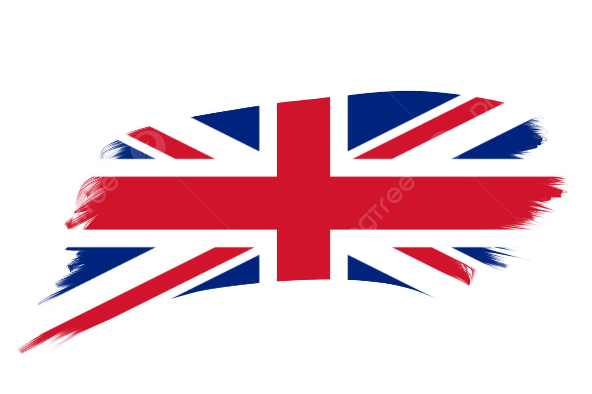
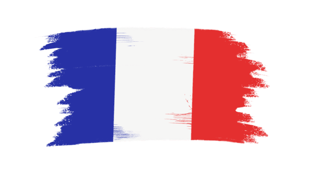

Opleidingen
-
September 2023 – Juni 2025
Sint-Ursula – Applicatie- en Databeheer -
September 2025 – Januari 2026
AP Hogeschool – Bachelor Toegepaste Informatica -
Februari 2026 – Heden
Thomas More – Graduaat Programmeren
Werkervaring
Momenteel heb ik nog geen werkervaring binnen de IT-sector. Tijdens mijn studies werk ik wel aan verschillende projecten om mijn programmeervaardigheden verder te ontwikkelen.
Programmeervaardigheden

HTML
Structuur van webpagina's maken.

CSS
Styling en layout van websites ontwerpen.

JavaScript
Interactiviteit toevoegen aan websites.

Python
Programmeren van scripts en applicaties.

C#
Objectgeoriënteerd programmeren en applicaties bouwen.

SQL
Databases beheren en gegevens opvragen.
Talen
Dit zijn alle talen die ik kan spreken en begrijpen.

Nederlands
Moedertaal

Engels
Vloeiend

Frans
Basiskennis
Download mijn CV
Klik op de knop hieronder om mijn curriculum vitae als PDF te downloaden.
Download CV